Fun with Flow Models
Two halves of one idea. Part A drives a pretrained text-to-image flow model, PixNerd, with nothing but its velocity predictions and a hand-written Euler loop — denoising, sampling, classifier-free guidance, image editing, visual anagrams, and hybrid images. Part B builds the machinery from scratch: a UNet trained on MNIST, first as a one-step denoiser, then as a time- and class-conditioned flow-matching model that draws digits out of pure noise.
Exploring the Power of Flow Models
A flow model is trained to predict a velocity: given a noisy image at time t, which direction points toward a clean one? Everything below is a different way of using that single prediction. Following the handout, t = 0 is pure noise and t = 1 is a clean image, with a straight-line path between them:
vθ(xt, t, c) ≈ x1 − ε xt+h = xt + h vθ(xt, t, c)
| Setting | Value used throughout |
|---|---|
| Model | PixNerd-XXL-P16-T2I (512×512 text-to-image flow model); prompts embedded with model.encode (Qwen3) |
| Sampler | Euler, step size h = 0.02 (50 steps from t = 0) |
| Guidance | CFG weight w = 7, empty-string "" as the unconditional prompt (from 2.1 on) |
| Randomness | Global seed 180; initial noise from torch.Generator().manual_seed(seed) |
| Hardware | Colab Tesla T4, float32, ~11.5 GiB peak memory |
Constructing Noisy Training Inputs
A training input is not just an image plus noise — the image is also scaled down by t. For Sections 1.1–1.5 I used a photo of Sather Gate (not the Campanile), center-cropped to a square, resized to 512×512, and normalized to RGB ∈ [−1, 1]. One noise tensor ε is sampled once (seed 180) and reused at every time, so the three noisy images differ only in their mix.
def interpolate(image, noise, t):
return (1-t)*noise + t*image
epsilon = noise(SEED)
noisy = {t: interpolate(image, epsilon, t) for t in [.25, .50, .75]}
assert torch.equal(interpolate(image, epsilon, 0), epsilon) # t=0 is pure noise
assert torch.equal(interpolate(image, epsilon, 1), image) # t=1 is the clean image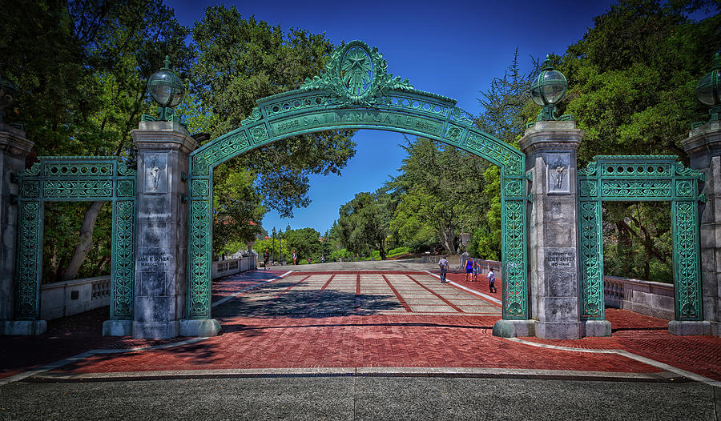

The image-to-noise amplitude ratio is t : (1 − t), i.e. 1:3, 1:1 and 3:1. At t = 0.25 almost nothing is left: only a faint pale patch where the sky shows through the arch. At 0.50 the arch and the tree line are recognizable but buried in speckle, and at 0.75 the photo is essentially intact with grain on top. The panels also look flatter and lower-contrast than the original — that is the t scaling at work, and it is why the classical baseline in 1.2 divides by t before blurring.
Classical Denoising
The baseline uses no learned model: restore the image amplitude by dividing by t, then average neighboring pixels so the independent noise partially cancels.
For each time I swept σ ∈ {1, 2, 4, 8, 16} (kernel size 6σ + 1) and kept the σ with the lowest MSE against the clean image. That selection peeks at the ground truth, which a real denoiser could not do — it makes this the best case for Gaussian blur.
candidates = {s: gaussian_blur(x/t, [int(6*s+1)]*2, [s,s]) for s in [1., 2., 4., 8., 16.]}
sigma = min(candidates, key=lambda s: ((candidates[s]-image)**2).mean().item())


The best σ climbs from 1 to 4 to 8 as noise increases, and every step up costs detail. At 0.75 a one-pixel-scale blur removes the grain at a small price in sharpness; at 0.50 the arch survives as a soft shape; at 0.25 nothing but colored blobs for sky, foliage and brick remains. A Gaussian is a fixed, image-agnostic low-pass filter, so it cannot separate noise from fine texture — removing one removes the other.
One-Step Denoising
The model predicts a velocity, not the clean image, so to get a clean-image estimate I extrapolate along that velocity for the remaining time 1 − t, using the prompt “a high quality photo”.
def one_step_denoise(x, t, condition, predict_velocity):
return x + (1-t)*predict_velocity(x, t, condition)
v = predict_velocity(noisy[.5], .5, condition)
assert v.shape == image.shape and v.dtype == image.dtype and v.device == image.device
assert torch.isfinite(v).all()


One step is excellent at 0.75, good but smoother at 0.50 (the foliage and brick texture are partly averaged away), and at 0.25 it produces a clean-looking but featureless image: the arch, trees and plaza are in the right places, while the ornament, the pedestrians and the paving lines are gone. Compared with Gaussian blur, though, it is dramatically better at every noise level — it removes the noise without blurring the structure that the blur destroyed.
The blur is not a bug; it follows from the training loss. A network trained with squared error learns a conditional mean, v = E[x1 − ε | xt]. Because xt = (1 − t)ε + tx1, the noise term can be eliminated, E[ε | xt] = (xt − t E[x1 | xt]) / (1 − t), and substituting into the one-step formula gives exactly x1 = E[x1 | xt]. The one-step output is the average of every clean image consistent with the noisy input. When little noise is present there is essentially one such image; when a lot is present, the average is a smooth blend. Part B 1.2.3 shows the extreme case of the same effect.
Visualizing Velocity
In 1.3 the model adds (1 − t) v to the noisy image. Because I know the original, I also know exactly what should be added, x1 − xt = (1 − t)(x1 − ε). The error heatmap is the per-pixel RMS difference between the two updates across RGB, computed before any display scaling:
predicted_velocity = predict_velocity(x_t, t, condition)
predicted_update = (1-t) * predicted_velocity
ground_truth_update = image - noisy[t] # x1 - x_t
ground_truth_velocity = ground_truth_update / (1-t) # x1 - epsilon
error_map = torch.sqrt(torch.mean(((1-t)*(predicted_velocity - ground_truth_velocity))**2, dim=1))Display: all six updates share one symmetric RGB scale (zero is middle gray, ± the largest magnitude across all of them), and all three error maps share one linear scale from 0 to the largest error among them (matplotlib's default colormap), so brightness is comparable across times.


Three things stand out. First, the updates shrink as t grows: at 0.75 both are close to uniform gray (nearly zero) because there is little left to add, and the (1 − t) factor shrinks them further. Second, the predicted update is a smoothed version of the true one: it gets the large-scale tones right — sky, tree mass, arch, plaza — but the ground truth also carries fine pattern (brick lines, leaf texture, carved ornament) that the prediction omits. Third, the error heatmap lights up along edges and textured regions and is near zero in the smooth sky, so the model is most reliable exactly where the image is most predictable. On the shared scale the error is largest at 0.25 and fades by 0.75.
Iterative Denoising with Euler Sampling
The velocity changes as the image changes, so one big step is inaccurate. Instead: take a small step, recompute the velocity at the new point, repeat. The last step is shortened if needed so the integration lands on t = 1 exactly.
@torch.inference_mode()
def euler_sample(x_start, t_start, step_size, velocity):
curr_t = float(t_start)
curr_x = x_start
states = []
steps = math.ceil((1.0 - t_start) / step_size)
for i in range(steps):
h = min(step_size, 1.0 - curr_t)
v = velocity(curr_x, curr_t)
curr_x = curr_x + h * v
curr_t += h
states.append([curr_t, curr_x])
return curr_x, statesI tested it against a constant velocity field (v = 1 on an all-zeros tensor), where the answer is known analytically: starting at t = 0 it makes 50 velocity calls, at 0.5 it makes 25, and at 0.93 it makes 4 (three steps of 0.02 plus a shortened step of 0.01). In every case the final time is exactly 1 and the result is 1 − t0 everywhere.
Starting from the saved t = 0.50 noisy image, 25 updates with h = 0.02. Below: the initial state and every fifth update (which land at t = 0.6, 0.7, 0.8, 0.9, and the final 1.0).


The trajectory shows a coarse-to-fine order: by t = 0.7 the arch, trees and plaza are in place and the speckle is already fading, while fine texture (stonework, foliage, the figures) sharpens last, between 0.8 and 1.0. In the comparison, blur is the worst, one-step is clean but smooth with muted texture, and Euler is clearly the sharpest and closest to the original. It is worth being precise about what Euler recovers, though: the fine detail is re-synthesized, not recovered — the carved ornament and the pedestrians are plausible but not identical to the original. Taking many small steps lets each step commit to a little more detail given what has already been decided, instead of averaging over every possibility at once as the single step does.
Generating Images from Noise
The same euler_sample generates images from scratch:
start at t = 0 with torch.randn noise and integrate all 50
steps to t = 1, using the prompt “a high quality photo”
and no guidance. I ran two sets of five seeds.


Subject bias: all ten samples are portraits of people, even though the prompt names no subject. “A high quality photo” evidently sits closest to portrait photography in the model's training distribution, so the unspecific prompt collapses onto that mode. Quality is poor, too: seed 180 has a blank, faceless head, 181 an unnaturally textured torso, 183 a melted face, 200 a distorted mouth, 240 a mangled hand, and 260 a scrunched, warped face. The composition is sensible but the details do not hold together — the conditional-only velocity is not decisive enough.
Classifier-Free Guidance
Guidance trades diversity for prompt alignment and quality. Evaluate the model twice at the same xt and t — once with the text prompt (vc) and once with the empty string (vu) — and push the prediction further in the direction the prompt adds:
def cfg_velocity(x, t, condition, w, predict_velocity, null_condition=null_condition):
v_c = predict_velocity(x, t, condition)
return v_c + w * (v_c - predict_velocity(x, t, null_condition))
x = noise(SEED)
assert torch.equal(cfg_velocity(x, .5, condition, 0, predict_velocity, null_condition),
predict_velocity(x, .5, condition)) # w = 0 is plain conditional samplingBelow are the same two seed sets as Section 1.6 — identical initial noises, same prompt “a high quality photo”, now with w = 7. Compare each panel with its counterpart above.


Quality up. Every one of the ten guided samples is a well-formed, well-lit portrait — the faceless head, melted face, mangled hand and warped torsos from 1.6 are all gone. Diversity down. They also converge on the same kind of picture: a front-facing, head-and-shoulders studio portrait of a young adult against a plain background. This is the guidance trade-off in action: the extrapolation vc − vu pushes toward what is typical of the prompt and away from the unconditional mix, which makes outputs better and more alike.
Interestingly, guidance changes the details far more than the layout, because the same initial noise still fixes the coarse structure early in the trajectory. The background tone carries over in nearly every pair (dark stays dark, light stays light), and seed 182 keeps its pose of a hand raised to the cheek — the guided version simply renders it correctly, and seed 183 keeps its dark background and dark hair.
Image-to-Image Editing
To edit a real image, noise it to a starting time tstart and then denoise from there with the guided sampler. The more noise I add (the smaller tstart), the less of the original is left to hold on to, so the model has to invent more — it is forced back onto the manifold of natural images. This is the SDEdit idea. Every sweep uses the same seven starting times, 0.02, 0.04, 0.06, 0.10, 0.14, 0.25, 0.50, the same noise ε (seed 180) throughout, and the prompt “a high quality photo”. Panels read left to right, top to bottom: original, then the seven edits.
def edit(image, noise, t_start, condition, predict_velocity, w=7, step_size=0.02):
x_start = interpolate(image, noise, t_start)
def guided_v(x, t):
return cfg_velocity(x, t, condition, w, predict_velocity, null_condition=null_condition)
x_final, _ = euler_sample(x_start, t_start, step_size, guided_v)
return x_final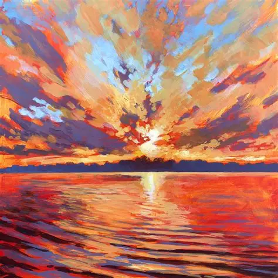
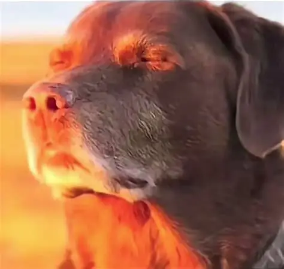
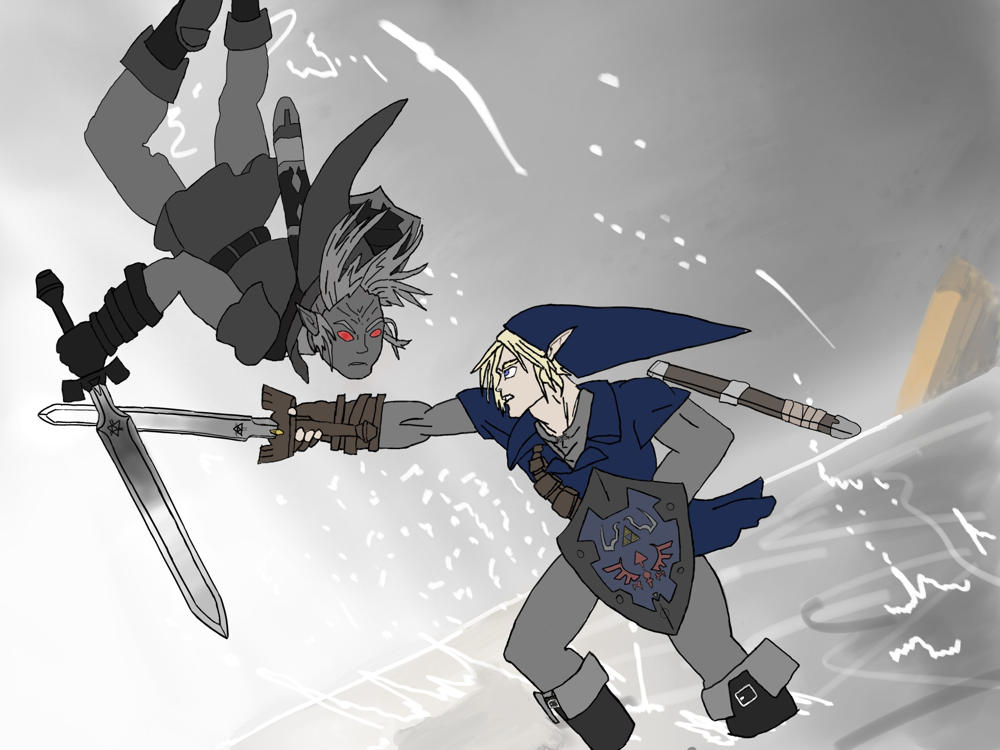
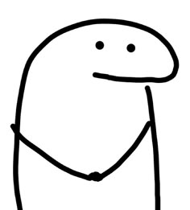
Other inputs used below, left to right: a painted sunset (from the web), a dog photo (test image 2), and two drawings. The Sather Gate photo (test image 1) is shown in 1.1.
Campanile

At 0.02 only a pale, rounded vertical shape against a blurry blue field survives. From 0.04 to 0.14 the model produces a smooth cream obelisk with the right silhouette, proportions and sky — but no belfry arches and no clock (at 0.06 it even adds a spurious dark bracket near the top). The three belfry arches and a small clock smudge come back at 0.25, and the clock hands and the vertical slits only at 0.50.
Test image 1: Sather Gate

With almost nothing to hold on to, the sampler falls back on the portrait bias seen in 1.6 (a faceless, curly-haired head at 0.02, a torso at 0.04). What survives from the input is its coarse color layout: the red brick plaza reappears at the bottom of the frame as a salmon-red label through 0.10 and as a red mat on a tree-lined street at 0.14. The gate itself returns at 0.25 (though with a smoothed, painted look and some invented cars) and is faithful by 0.50.
Test image 2: a dog

At 0.02 and 0.04 the input becomes a person's portrait with a black, monitor-like object beside the head — plausibly the dog's dark ear, reinterpreted. At 0.06–0.14 the result is an ambiguous smooth object, like a headphone or lens, set against the original's orange wall — the warm orange backdrop is the one thing that persists across almost the entire sweep. At 0.25 the dog is back in its original pose and sunlight, with different facial detail (the eye in particular), and at 0.50 it is close to the input with slightly smoothed fur.
Web image: a painting

A painting is already off the natural-image manifold, which makes this the clearest demonstration of the projection. At 0.02–0.06 the input is gone (a smiling woman, then a pink camera-like object with mirrored lettering). At 0.10 and 0.14 the composition has returned — sun at the center, a column of reflected light on the water — but rendered as a photograph: smooth clouds, a distant shoreline, realistic water. The brushstroke texture only comes back at 0.25 and is nearly complete at 0.50.
Hand-drawn images

The mostly grey palette seems to push the model toward black-and-white photographs: a man's portrait at 0.02 and 0.10, and hands holding a cup or a gadget from 0.04 to 0.14. The blue of the cap is the one color that persists, lingering in a blue device at 0.14. At 0.25 the two figures reappear but are fused into a single smeared shape; by 0.50 both are recovered with softer linework and a few warped regions.

A bold, high-contrast line drawing on white is far easier to hold on to: the big head outline starts to reappear at 0.04, the eyes by 0.06, and from 0.10 the output is essentially the original redrawn with slightly softer, more uniform lines. Only the lowest time (0.02) loses it entirely — a white bowl whose rim echoes the head's curve.
The same arc appears in every sweep. Below about 0.05 the input is effectively gone and the model samples a generic (usually portrait-like) image; between roughly 0.06 and 0.14 is a transition zone where only the low-frequency layout — large regions of color and their positions — shapes a new scene; by 0.25 structure is back; and at 0.50 the edit is a light restoration. The images that sit furthest from natural photographs (the painting and the drawing) benefit most from the middle of the range, where the model re-renders them in a photographic or physical style. Using the same ε for every starting time also makes each sweep change smoothly rather than randomly.
Text-Guided Image Editing
Same procedure and starting times as 3.1, but the generic photo prompt is replaced with a prompt describing the edit I want. Small tstart gives the prompt more room; large tstart keeps more of the original.
Campanile → "a redwood tree"

At 0.02 the prompt wins completely, and since it says nothing about photography the result is a cartoon tree. The more interesting part is 0.04–0.14, where the Campanile's framing, taper and sky are kept while its stone becomes bark: a reddish, striated trunk rising from a pine forest, and later a pale wooden obelisk that still has the tower's window box on top. By 0.25 only faint bark grain on the stone remains, and at 0.50 the prompt has almost no visible effect.
Sather Gate → "a scary smile"

Here the palette does the work. The gate's blue-green patina and red brick turn into blue-teal skin and red lips in the grinning faces at 0.02–0.06, so the prompt is rendered in the original's colors. At 0.10 and 0.14 the result is a half-way object — a framed, cartoon-outlined picture over a red label — and at 0.25 the gate is back, but with a flat, slightly menacing painted look before 0.50 returns almost the original.
Dog → "a yummy breakfast"

From 0.02 to 0.14 the dog becomes food, again guided by color: the orange backdrop turns into orange slices, a table and fries, and the dark brown fur becomes chocolate cake. The most revealing result is 0.25, a literal split composition — the dog's head on the right half and breakfast on the left, with a visible seam where the original's structure and the prompt each win. At 0.50 the dog remains, with food-colored smears along the bottom.
Visual Anagrams
An anagram is one image that reads as two different things depending on orientation. At every Euler step I denoise xt normally with prompt p1, denoise it rotated by 180° with prompt p2, rotate that prediction back, and average the two velocities. The image therefore has to be a good denoising step for p1 upright and for p2 upside down at the same time.
def rotate180(x):
return torch.flip(x, (-2, -1)) # both spatial axes, not just a vertical flip
def visual_anagrams(noise, condition_a, condition_b, predict_velocity, w=7, step_size=0.02):
def joint_velocity(x, t):
v_a = cfg_velocity(x, t, condition_a, w, predict_velocity, null_condition=null_condition)
x_rotated = rotate180(x)
v_b_rotated = cfg_velocity(x_rotated, t, condition_b, w, predict_velocity, null_condition=null_condition)
v_b = rotate180(v_b_rotated)
return (v_a + v_b) / 2.0
x_final, _ = euler_sample(noise, 0.0, step_size, joint_velocity)
return x_finalIn each figure the left panel is the image upright and the right panel is the same image rotated 180°; each is titled with the prompt it was optimized for.
New York City skyline ↔ a chess board

Snowy mountain village ↔ a horse

An attempt that only half works: a black man ↔ a white woman

The skyline / chess board pair is the cleanest: both orientations read clearly, with only traces of the other subject (chess pieces among the buildings upright; the skyline hanging upside down beneath the board when rotated). It works because the two scenes share a layout — vertical objects standing on a horizontal band — so the same pixels can serve both. The village / horse pair reads both ways, but each view still carries a faint copy of the other subject (a horse's head near the foot of the village scene). The man / woman pair is weakest: each view is dominated by its own subject but with a ghost of the other, because both prompts want a face in the same region and the facial features collide when rotated, so an inverted face remains visible under the man's chin. That pattern holds across the three pairs above: illusions work best when the two subjects can share structure, not compete for the same pixels. They also needed several attempts — a numerically successful run does not guarantee that both subjects are recognizable.
Hybrid Images
Project 2's hybrid images, generated instead of composited: at each step I take the low frequencies of one prompt's guided velocity and the high frequencies of another's, so the image is built from the prompt for coarse shape (what you see from far away) and a different prompt for fine detail (what you see up close).
def lowpass(x, sigma=16.0): # provided: at 512 x 512 this is kernel size 265, sigma 16
kernel = 2 * round(16.5 * x.shape[-1] / 64) + 1
return gaussian_blur(x, [kernel, kernel], [sigma, sigma])
def make_hybrids(noise, condition_a, condition_b, predict_velocity, w=7, step_size=0.02):
def joint_velocity(x, t):
v_a = cfg_velocity(x, t, condition_a, w, predict_velocity, null_condition=null_condition)
v_b = cfg_velocity(x, t, condition_b, w, predict_velocity, null_condition=null_condition)
v_a_lowpass, v_b_highpass = lowpass(v_a), v_b - lowpass(v_b)
return (v_a_lowpass+v_b_highpass)
x_final, _ = euler_sample(noise, 0.0, step_size, joint_velocity)
return x_finalEach result is shown at full size (close up) and downsampled to 64×64 with Lanczos resampling (far away), plus the small version enlarged 4× so it is easy to inspect.
Distant: “a tombstone with writing on it” · close: “a battle scene from above” (seed 181)


Distant: “a face” · close: “realistic two story house at night” (seed 180)


The tombstone / battle hybrid works well. Up close it is plainly a top-down battle — individual soldiers, spears and shadows — but at 64×64 those details merge into rows of tiny marks inside a pale, arch-topped slab on a dark ground, which reads convincingly as a tombstone covered in writing. The face / house hybrid is the weaker of the two: even at 64×64 the picture still looks like a house, and the only head-like cue is the black roof reading as hair above a lit “face”.
My read of why: the low-pass filter (σ = 16 at 512 px) only passes structure at scales of roughly a hundred pixels or larger. A tombstone is exactly that — one large, simple silhouette — so the low-frequency prompt can fully determine it. A face needs eyes, a nose and a mouth at mid-scale, which fall into the high-pass half that belongs to the house prompt, so the house's own structure wins. Choosing a distant subject whose identity lives in its overall silhouette (as the tombstone does) looks like the key to a convincing hybrid.
Flow Matching from Scratch
Part A used someone else's model; here I build and train my own, on MNIST. The path is the one the handout lays out: a one-step denoiser first, to see what a UNet trained with squared error actually learns, then a flow-matching model that turns pure noise into digits by integrating a learned velocity field — conditioned on time, then on class with classifier-free guidance. Pixels are in [0, 1]; flow time runs from noise at t = 0 to data at t = 1, and the network predicts the velocity x1 − x0, not the noise.
| Run | Hidden dim D | Batch | Epochs (steps) | Optimizer |
|---|---|---|---|---|
| Denoiser, σ = 0.5 (1.2.1) | 128 | 256 | 5 (1,175) | Adam, lr 1e-4 |
| Denoiser, pure noise (1.2.3) | 128 | 256 | 5 (1,175) | Adam, lr 1e-4 |
| Time-conditioned flow (2.2) | 64 | 64 | 10 (9,380) | Adam, initial lr 1e-4, ExponentialLR γ = 0.11/10 |
| Class-conditioned flow (2.5) | 64 | 64 | 10 (9,380) | Adam, initial lr 1e-4, ExponentialLR γ = 0.11/10 |
| Class-conditioned, no scheduler (2.6) | 64 | 64 | 10 (9,380) | Adam, constant lr 1e-3 |
All runs use the MNIST training set only (60,000 images), reshuffled every epoch, seed 180, on a Colab T4 (float32 with TF32 matmuls). Noise is drawn fresh for every batch after it comes out of the dataloader, so no epoch ever sees the same noisy image twice.
Implementing the UNet
Two stride-2 convolutions take the 28×28 input down to 7×7, a 7×7 average pool squeezes that to a single 1×1 vector, and a mirrored decoder with skip connections brings the resolution back. D is the hidden channel count.
- Conv — 3×3
Conv2d(padding 1, no bias) →BatchNorm2d→ GELU. Changes channels, keeps resolution. - DownConv — the same with stride 2. Halves the resolution.
- UpConv — 4×4
ConvTranspose2d(stride 2, padding 1) → BN → GELU. Doubles the resolution. - Flatten —
AvgPool2d(7)→ GELU: 7×7 → 1×1. - Unflatten — 7×7
ConvTranspose2d→ BN → GELU: 1×1 → 7×7. - ConvBlock / DownBlock / UpBlock — Conv∘Conv, DownConv→Conv and UpConv→Conv: the same shape change, with extra depth.
- Concat —
torch.catalong channels with the matching encoder feature map.
| Stage | Operation | Output shape |
|---|---|---|
| input | noisy image | 1×28×28 |
| init_conv | ConvBlock (1 → D) | D×28×28 |
| down1 | DownBlock (D → D) | D×14×14 |
| down2 | DownBlock (D → 2D) | 2D×7×7 |
| flatten | AvgPool(7) → GELU | 2D×1×1 |
| unflatten | Unflatten | 2D×7×7 |
| concat with down2 | — | 4D×7×7 |
| up1 | UpBlock (4D → D) | D×14×14 |
| concat with down1 | — | 2D×14×14 |
| up2 | UpBlock (2D → D) | D×28×28 |
| concat with init_conv | — | 2D×28×28 |
| out_conv, proj | ConvBlock (2D → D), then 1×1 conv | 1×28×28 |
def forward(self, x):
x_init = self.init_conv(x)
x_down1 = self.down1(x_init)
x_down2 = self.down2(x_down1)
x_flat = self.flatten(x_down2)
x_up0 = torch.cat((x_down2, self.unflatten(x_flat)), dim=1)
x_up1 = torch.cat((x_down1, self.up1(x_up0)), dim=1)
x_up2 = torch.cat((x_init, self.up2(x_up1)), dim=1)
return self.proj(self.out_conv(x_up2))The Noising Process
The denoiser is trained on pairs (z, x) where x is a clean digit in [0, 1] and z is a noisy copy.
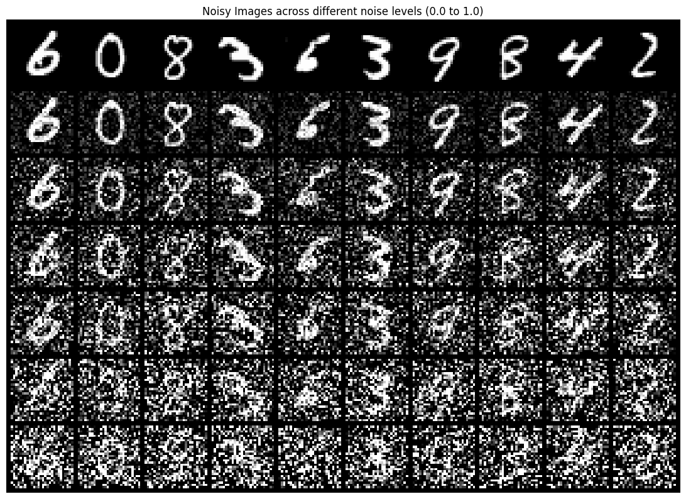
Through σ = 0.4 every digit is easy to read. At the training level, σ = 0.5, strokes are ragged but still legible; by 0.8 only the larger structures survive, and at 1.0 — where the noise is as strong as the 0–1 signal itself — most digits are buried. Since MNIST is a bright stroke on a black background, noise hurts most in the empty regions, where it can mimic a stroke.
Training the Denoiser (σ = 0.5)
A D = 128 UNet trained for 5 epochs with batch size 256 (235 steps per epoch, 1,175 in all) to map z = x + 0.5ε back to x, with an MSE loss. See the table above for the optimizer settings.
for epoch in range(num_epochs):
model.train()
for i, (images, _) in enumerate(tqdm(train_loader)):
images = images.to(device)
noise = torch.randn_like(images).to(device)
noisy_images = images + noise_level * noise
outputs = model(noisy_images)
loss = criterion(outputs, images)
optimizer.zero_grad()
loss.backward()
optimizer.step()
train_losses.append(loss.item())
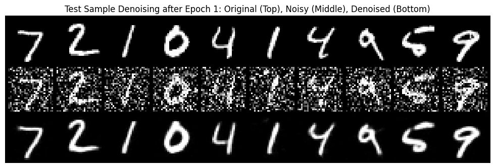
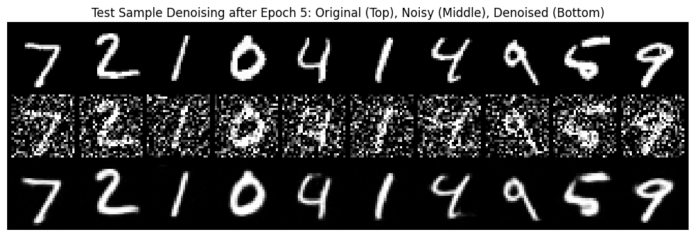
The smoothed loss drifts down from about 0.0083 to about 0.0076 over the 1,175 steps — a gentle slope. The sample grids tell the same story: after epoch 1 the digits are cleanly recovered but a thin-stroked “1” (sixth from the left) is almost erased; after epoch 5 every digit is present with continuous strokes. The denoised digits remain slightly softer than the originals, as expected from a squared-error objective: when a stroke edge is ambiguous the best guess in the MSE sense is a blend.
Out-of-Distribution Testing
The denoiser only ever saw σ = 0.5. Here the same ten test digits are noised at other levels and passed through the trained model.

Below the training level the model is fine: at σ = 0.0, 0.2 and 0.4 the outputs are as clean as at 0.5 — a lighter-noise input is simply an easier version of the problem. Above it, quality falls off steadily. At 0.6 faint speckle appears around the digits and thin strokes start to break; at 0.8 several digits are distorted or fragmented (the thin “1”s fare worst); at 1.0 most outputs are unrecognizable scribbles, though a few keep a hint of the original shape. My interpretation: the network never learns how much noise to remove, only what a typical σ = 0.5 input needs. Given heavier noise it under-denoises, and residual noise that looks like a stroke gets kept.
Denoising Pure Noise
To make denoising generative, start from a blank canvas z = ε and ask for a clean digit. Same model, optimizer and 5 epochs as 1.2.1; the only change is that the input is pure Gaussian noise, independent of the target.
noise = torch.randn_like(images).to(device)
outputs = model_pure(noise) # the input carries no information about `images`
loss = criterion(outputs, images)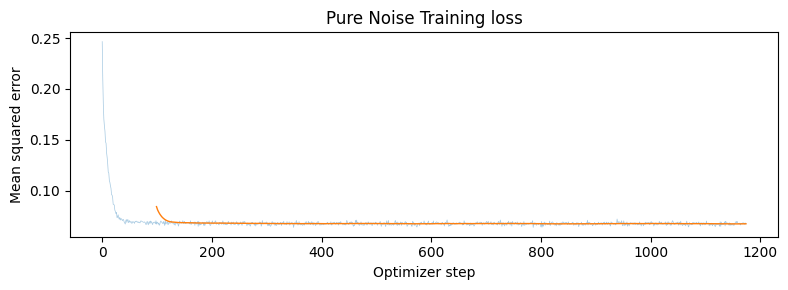
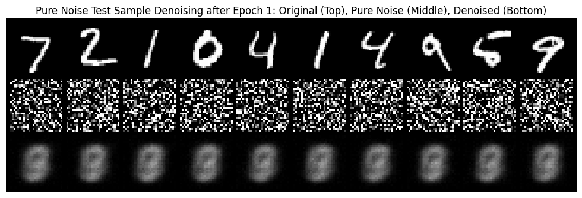
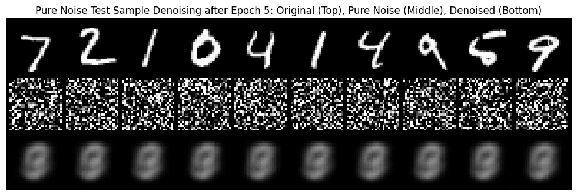
What I see. Every output is the same blurry, vertically elongated blob that looks like a superposition of 0, 3, 6, 8 and 9 — the ten different noise inputs produce ten indistinguishable results, and epoch 5 is just a smoother version of epoch 1. It is not a digit, and there is no diversity at all.
Why. The input is independent of the target, so the network cannot tell which digit it is “supposed” to output. With a squared-error loss, the single prediction that minimizes the expected loss when nothing is known is the mean of the targets, E[x]: the pixel-wise average of all 60,000 training digits, i.e. their centroid. The blob is exactly that — bright where many digits' strokes overlap, dim toward the borders where few do. I checked the numbers: the lowest MSE any constant image can reach on the MNIST training set (its per-pixel variance about the mean image) is 0.0673, and the loss plateaus at ≈ 0.069, within my reading error of the plot. So the network has learned precisely the constant best predictor, and it does so within the first couple of hundred steps. Compare the 0.0076 of the σ = 0.5 denoiser: there the input does carry information, so the loss can be roughly an order of magnitude lower. This is the same effect as the blurry one-step estimate at t = 0.25 in Part A, taken to its limit: at t = 0 the input contains no image information at all, and the conditional mean is the prior mean.
This is why one-step denoising is not a generative model and why Part 2 moves to flow matching: a sampler must commit to one digit, and it can only do that by taking many small steps that each resolve a little of the ambiguity.
Adding Time Conditioning to the UNet
Now the model learns a flow, uθ(xt, t) ≈ x1 − x0, with
xt = (1 − t)x0 + tx1 and x0 ~ N(0, I). It must be told t, since
the right velocity depends on how far along the path the input is. I
inject the scalar t (already in [0, 1]) through two FCBlocks — a
Linear→GELU→Linear MLP — whose outputs multiply
the decoder's features at two points. The network still predicts a
flow, not an image: its output contains both the digit to add and the
noise to remove.
class FCBlock(nn.Module):
def __init__(self, in_channels, out_channels):
super().__init__()
self.lin1 = nn.Linear(in_channels, out_channels)
self.gelu = nn.GELU()
self.lin2 = nn.Linear(out_channels, out_channels)
def forward(self, x):
return self.lin2(self.gelu(self.lin1(x)))
# in TimeConditionalUNet
self.fc1_t = FCBlock(1, num_hiddens * 2) # modulates the unflatten output (2D channels)
self.fc2_t = FCBlock(1, num_hiddens) # modulates the up1 output (D channels)
t1 = self.fc1_t(t).unsqueeze(-1).unsqueeze(-1)
t2 = self.fc2_t(t).unsqueeze(-1).unsqueeze(-1)
unflat_feat = self.unflatten(x_flat) * t1
x_up0 = torch.cat((x_down2, unflat_feat), dim=1)
up1_feat = self.up1(x_up0) * t2
x_up1 = torch.cat((x_down1, up1_feat), dim=1)Training the Time-Conditioned UNet
Each step draws a batch of digits x1, fresh noise x0, and one random t ~ U[0, 1] per image; builds xt; and regresses the flow with an MSE loss. D = 64, batch size 64 (938 steps per epoch, 9,380 in all), 10 epochs, with an exponentially decaying learning rate — see the table above.
def time_fm_forward(unet, x_1, num_ts):
unet.train()
N = x_1.shape[0]
t = torch.rand(N, device=device)
x_0 = torch.randn_like(x_1)
t_expanded = t.view(N, 1, 1, 1)
x_t = (1.0 - t_expanded) * x_0 + t_expanded * x_1
v_target = x_1 - x_0
v_pred = unet(x_t, t)
return F.mse_loss(v_pred, v_target)
The loss falls from above 1.5 on the first step to below about 0.25 within a few hundred steps, then creeps down to roughly 0.12 (smoothed) by the end. It never gets near the 0.0076 of the denoiser, and it is not supposed to: the target x1 − x0 contains pure noise, and from xt alone the model can only partly pin down which noise was drawn. The floor of this loss reflects irreducible uncertainty, not a training failure.
Sampling from the Time-Conditioned UNet
Sampling starts from pure Gaussian noise at t = 0 and follows the learned flow with 50 Euler steps, xt+Δt = xt + Δt uθ(xt, t), Δt = 1/50, then clamps to [0, 1]. Each grid is 100 samples generated from the same 100 initial noises (seed 180) using the epoch-1, epoch-5 and epoch-10 checkpoints, so corresponding cells are directly comparable.
@torch.inference_mode()
def time_fm_sample(unet, img_wh, num_ts, seed=0):
unet.eval()
N = 100
g = torch.Generator(device=device).manual_seed(seed)
x_t = torch.randn(N, 1, *img_wh, device=device, generator=g)
dt = 1.0 / num_ts
for i in range(num_ts):
t = i * dt
t_batch = torch.full((N,), t, device=device)
v_pred = unet(x_t, t_batch)
x_t = x_t + v_pred * dt
return x_t.clamp(0.0, 1.0)


After epoch 1 the samples already have MNIST's texture — thick, pen-like strokes on a clean black background — but only a handful read as digits. By epoch 5 a good fraction are legible (7s, 9s, 0s, 6s, 2s, 4s), and epoch 10 sharpens strokes further without changing most samples: the same noise ends up as the same digit, so (for example) the third sample in the top row goes from a hook-like scribble to a clean 7 at epoch 5 and stays a 7. The results are decent but clearly imperfect: a sizable share are malformed, half-way shapes between two digits. That is the expected weakness of an unconditional model, which must decide on a digit implicitly, early in the flow, from the noise alone — and in the ambiguous regions between digits its average velocity points somewhere in between.
Adding Class Conditioning to the UNet
To get both better samples and control over which digit comes out, the UNet is additionally conditioned on the class. Two more FCBlocks embed a one-hot class vector c, and the modulation becomes scale-and-shift: the class scales the features and time shifts them.
self.fc1_t = FCBlock(1, num_hiddens * 2)
self.fc1_c = FCBlock(num_classes + 1, num_hiddens * 2)
self.fc2_t = FCBlock(1, num_hiddens)
self.fc2_c = FCBlock(num_classes + 1, num_hiddens)
unflat_modulated = c1 * unflat_feat + t1
x_up0 = torch.cat((x_down2, unflat_modulated), dim=1)
up1_modulated = c2 * up1_feat + t2
x_up1 = torch.cat((x_down1, up1_modulated), dim=1)
To keep the model usable without a class (which classifier-free
guidance needs), the label is dropped 10% of the time
(puncond = 0.1) during training. I implement “dropped” with
a dedicated eleventh one-hot slot — a “null class” —
rather than an all-zeros vector, which is why the class FCBlocks take
num_classes + 1 = 11 inputs. It plays the same role as
zeroing the vector: a fixed, learned “no label” signal.
c_idx = c.clone()
if mask is not None:
c_idx[mask == 0] = self.num_classes # index 10 = "no label"
c_onehot = F.one_hot(c_idx, num_classes=self.num_classes + 1).float()Training the Class-Conditioned UNet
Training is identical to 2.2, with two differences: the batch's digit labels are passed in as c, and with probability 0.1 each label is replaced by the null class.
def class_fm_forward(unet, x_1, c, p_uncond, num_ts):
unet.train()
N = x_1.shape[0]
t = torch.rand(N, device=x_1.device)
x_0 = torch.randn_like(x_1)
t_expanded = t.view(N, 1, 1, 1)
x_t = (1.0 - t_expanded) * x_0 + t_expanded * x_1
v_target = x_1 - x_0
mask = (torch.rand(N, device=x_1.device) > p_uncond).long() # mask == 0 means: drop the label
v_pred = unet(x_t, c, t, mask=mask)
return F.mse_loss(v_pred, v_target)
The curve has the same shape as the time-only model but settles lower — about 0.10 versus 0.12 (smoothed values read off the plots) — because the label removes part of the uncertainty about where the flow is headed.
Sampling with Classifier-Free Guidance
Sampling runs the flow twice per step — once with the class and once with the null class — and extrapolates from the unconditional prediction toward the conditional one with γ = 5. (Note this is a different convention from Part A's vc + w(vc − vu): here the unconditional output is the base, so γ = 1 is plain conditional sampling and Part A's w corresponds to γ − 1.) 300 Euler steps.
@torch.inference_mode()
def class_fm_sample(unet, c, img_wh, num_ts, guidance_scale=5.0, seed=0):
unet.eval()
N = c.shape[0]
x_t = torch.randn(N, 1, img_wh[0], img_wh[1], device=c.device)
dt = 1.0 / num_ts
for i in range(num_ts):
t_batch = torch.full((N,), i * dt, device=c.device)
v_cond = unet(x_t, c, t_batch, mask=torch.ones(N, device=c.device))
v_uncond = unet(x_t, c, t_batch, mask=torch.zeros(N, device=c.device))
v_pred = v_uncond + guidance_scale * (v_cond - v_uncond)
x_t = x_t + v_pred * dt
return x_t.clamp(0.0, 1.0)Each grid has four independent samples of every digit: columns are the digits 0–9 and each row is a separate draw of noise.


The difference from 2.3 is dramatic. Already after one epoch the label is obeyed — each column is clearly the requested digit for most samples — though several 4s, 5s and 9s are malformed. By epoch 5 all forty samples are clean and legible, and by epoch 10 the strokes are crisper, with a little more variation in slant and thickness within each class. The label removes the model's need to decide what to draw, and guidance sharpens the result. One fair caveat on the comparison: this model also samples with 300 steps instead of 50, so the improvement bundles class conditioning, guidance and finer integration rather than isolating any one of them.
Getting rid of the learning-rate scheduler
Can I drop ExponentialLR and keep the same quality? Yes.
What I did to compensate: I trained a fresh, otherwise identical
model — same D = 64 architecture, batch size 64, 10 epochs,
puncond = 0.1, same 300-step γ = 5 sampler — with Adam at a
single constant learning rate of 1e-3.
optimizer_nosched = torch.optim.Adam(fm_nosched.parameters(), lr=1e-3) # no scheduler.step()

The no-scheduler samples are just as good as the scheduled ones: all 40 are clean, correctly labeled digits (if anything marginally crisper), and the training loss ends slightly lower, about 0.09 versus 0.10. The scheduler's job is to take large steps early and small steps late, shrinking the effective noise in the updates as the model converges. Without it there is no late-stage annealing, so the constant rate has to do both jobs: it must be small enough to settle into a good minimum yet large enough to learn quickly in only ten epochs. I did not sweep this value — 1e-3 was my one choice, and Adam's per-parameter step normalization plus BatchNorm make this UNet fairly forgiving of it.
Two caveats keep this from being a clean test of “schedule versus no schedule.” Each variant is a single run judged on one 40-image grid and a noisy loss curve, so small differences are not meaningful. And the two learning-rate ranges differ: the scheduled run goes from 1e-4 down to about 1.3e-5, so the constant 1e-3 is ten times its starting rate. What the experiment does show is that, for this problem and training length, a single well-chosen constant learning rate can replace the decay schedule without hurting sample quality.
The Most Important Thing I Learned
A flow model is just a velocity field, and nearly everything in this project is a different way of choosing where to start integrating, what to condition on, or how to combine velocities before an Euler step: editing is starting partway along the path, guidance is extrapolating between two velocities, and anagrams and hybrids are averaging them or splitting them by frequency. The other lesson is that a network trained with squared error predicts an average — which is exactly why the one-step estimates in Part A and the pure-noise denoiser in Part B are blurry, and why taking many small steps, and conditioning on a class or a prompt, is what turns that average into an actual sample.
Part A uses the pretrained PixNerd-XXL-P16-T2I model
(MCG-NJU/PixNerd-XXL-P16-T2I). The visual-anagram method follows
Visual Anagrams: Generating Multi-View Optical Illusions with Diffusion Models
(arXiv:2311.17919),
and the hybrid-image method follows Factorized Diffusion. Project handout
and starter notebooks by the CS 180 staff:
Fun with Flow Models.